CS 184: Computer Graphics and Imaging, Spring 2026
Project 3-1: Path Tracer
Authors: Zihan Yi and Lu Jin
Date: March 30, 2026
Website URL: https://cal-cs184-student.github.io/hw-webpages-luu-212/hw3/index.html
Code URL: https://github.com/cal-cs184-student/hw3-pathtracer-lujin
Overview
In this project, we built the main components of a path tracer step by step. We first implemented camera ray generation and primitive intersection, then accelerated rendering with a BVH, added direct illumination and full global illumination, and finally improved efficiency with adaptive sampling. For the extra credit portion, we also implemented a near-first BVH traversal strategy to reduce unnecessary intersection tests and improve traversal performance.
Part 1: Ray Generation and Scene Intersection (20 Points)
Walk through the ray generation and primitive intersection parts of the rendering pipeline.
My rendering pipeline for Part 1 starts in PathTracer::raytrace_pixel(...). For each pixel \((x, y)\), I generate ns_aa samples using gridSampler->get_sample(), which gives a random point inside the pixel. I then convert that sample from pixel coordinates into normalized image coordinates by dividing by the image width and height. Those normalized coordinates are passed into camera->generate_ray(...). In my code, each generated camera ray is assigned r.depth = max_ray_depth, traced through the scene with est_radiance_global_illumination(...), and all returned radiance values are averaged before I write the final color into sampleBuffer. I also record the number of samples in sampleCountBuffer.
In Camera::generate_ray(...), I first map normalized image coordinates \((x, y) \in [0,1]^2\) onto the virtual sensor plane at \(z = -1\) in camera space. The horizontal and vertical sensor coordinates are computed as
This correctly maps the bottom-left image corner to the bottom-left of the sensor and the top-right image corner to the top-right of the sensor. I then construct the camera-space ray direction from the camera origin through the point \((x_s, y_s, -1)\), normalize that direction, and transform it into world space using the camera-to-world matrix c2w. The ray origin in world space is simply pos, the camera position. Finally, I initialize min_t and max_t with nClip and fClip so that the ray only considers valid intersections within the visible depth range.
After the ray is generated, primitive intersection determines what geometry the ray actually hits. For triangles, I compute two edge vectors from the triangle vertices and solve for barycentric coordinates and the ray parameter \(t\). If the barycentric coordinates are inside the valid range and \(t\) lies between min_t and max_t, then the intersection is valid and I update the ray's closest hit distance. For the full triangle intersection function, I also interpolate the shading normal from the three vertex normals using barycentric weights. For spheres, I solve the analytic ray-sphere quadratic equation, obtain the two roots, choose the nearest valid root in the ray interval, and then compute the surface normal as the normalized vector from the sphere center to the hit point. In both primitive types, I store the primitive pointer, material pointer, hit distance, and normal so the renderer can shade the closest visible surface correctly.
Explain the triangle intersection algorithm you implemented in your own words.
I implemented triangle intersection using the same idea as the Möller-Trumbore style test. First, I form the two triangle edge vectors
e1 = p2 - p1 and e2 = p3 - p1. Then I compute several helper vectors from the ray and the triangle: s = r.o - p1, s1 = cross(r.d, e2), and s2 = cross(s, e1). These let me solve a small linear system for the barycentric coordinates and the ray parameter \(t\) without explicitly computing the hit point first.
In my code, I compute a denominator dot(s1, e1). If that value is extremely close to zero, I immediately return false because the ray is parallel to the triangle plane or the system is numerically unstable. Otherwise, I solve for
The hit is valid only when \(b_1 \ge 0\), \(b_2 \ge 0\), and \(b_1 + b_2 \le 1\). Those conditions mean the intersection lies inside the triangle rather than outside it. I also require \(t\) to lie within the ray interval \([min_t, max_t]\), so I only keep the nearest visible hit. In has_intersection(...), I only update r.max_t and return whether a hit exists. In intersect(...), I additionally compute the third barycentric weight \(b_0 = 1 - b_1 - b_2\) and use
to interpolate a smooth shading normal from the three vertex normals. This makes the rendered result look smooth instead of flat-shaded on mesh triangles.
Show images with normal shading for a few small .dae files.
CBempty.dae: triangle intersection and interpolated normals. |

banana.dae: camera ray generation visualized through normal shading. |

CBspheres_lambertian.dae: analytic ray-sphere intersection. |
|
Part 2: Bounding Volume Hierarchy (20 Points)
Walk through your BVH construction algorithm. Explain the heuristic you chose for picking the splitting point.
In Part 2, I replaced the starter code's one-node hierarchy with a recursive BVH. My implementation begins in BVHAccel::construct_bvh(...). For every recursive call, I first compute a bounding box over all primitives in the current iterator range and also compute a second bounding box over the centroids of those primitives' bounding boxes. I then allocate a new BVHNode using the full primitive bounding box. If the number of primitives in the current range is at most max_leaf_size, I stop the recursion and store the iterators start and end directly in that node, making it a leaf.
Otherwise, I split the primitives into two subranges. The splitting heuristic I used is: choose the axis along which the centroid bounding box has the largest extent, then partition the primitives around the median centroid on that axis. In code, I compute
and select the axis with the largest component of that extent vector. This means I split along the direction where the primitives are most spread out spatially. After choosing the axis, I set mid = start + num_prims / 2 and call std::nth_element(...) using the selected centroid coordinate as the comparison key. That gives me an in-place median split without fully sorting the whole range. I then recursively build the left child on [start, mid) and the right child on [mid, end).
I used the median-on-largest-extent heuristic because it matches my code closely and is simple but effective. It tends to keep the tree reasonably balanced, avoids the infinite-recursion issue that can happen with a bad one-sided split, and usually groups nearby primitives together well enough for large performance gains. I did not implement SAH or traversal-order optimization in this part; the main acceleration in my code comes from recursively reducing the number of primitive intersection tests using spatial partitioning.
For ray-box intersection in BBox::intersect(...), I used the slab method. For each axis, I compute the entry and exit times where the ray intersects the two axis-aligned planes of the box. If the direction component on an axis is extremely close to zero, I check whether the ray origin already lies inside that slab; otherwise the box cannot be hit. Across all three axes, I keep updating the running interval
If at any point \(t_{min} > t_{max}\), the intervals do not overlap and the ray misses the box. Otherwise, the final interval is written back into t0 and t1.
For BVH traversal, both has_intersection(...) and intersect(...) first test the ray against the current node's bounding box. If the box is missed, the recursion returns immediately and all primitives below that node are skipped. If the node is a leaf, I test each primitive inside the leaf. In has_intersection(...) I short-circuit and return as soon as I find any hit. In intersect(...) I must keep checking both children or all primitives in the leaf because I need the nearest valid intersection, not just any intersection. Since my primitive intersection routines already update ray.max_t when they find a closer hit, later tests naturally become tighter.
Show images with normal shading for a few large .dae files that you can only render with BVH acceleration.
|
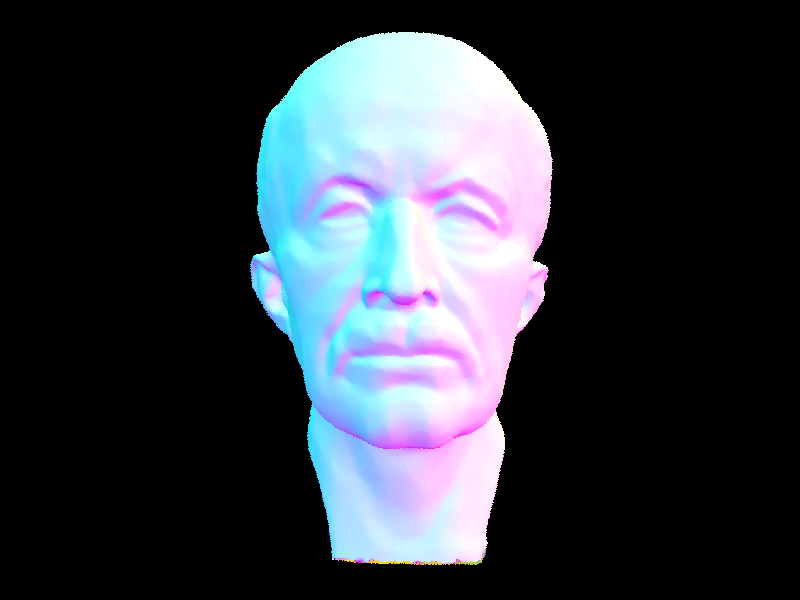 maxplanck.dae: a large triangle mesh rendered with BVH acceleration. |

CBlucy.dae: hundreds of thousands of triangles rendered efficiently using the BVH. |
|
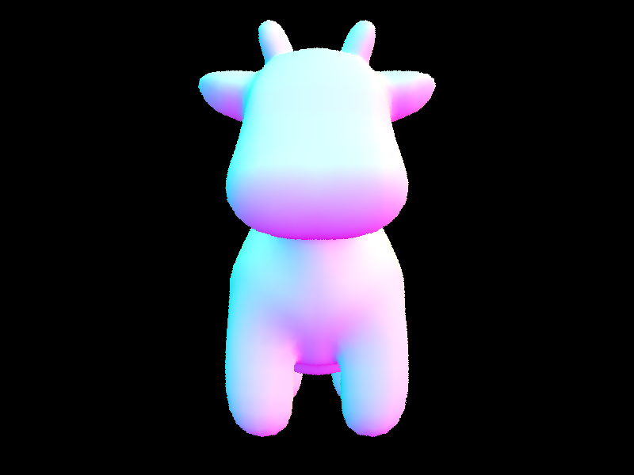 cow.dae: useful for both timing comparisons and visual verification of BVH traversal. |
|
Compare rendering times on a few scenes with moderately complex geometries with and without BVH acceleration. Present your results in a one-paragraph analysis.
| Scene | Without BVH | With BVH | Speedup |
|---|---|---|---|
cow.dae |
31.77 s | 0.17 s | 186.88x |
maxplanck.dae |
67.93 s | 0.42 s | 161.74x |
CBlucy.dae |
797.89 s | 1.33 s | 599.92x |
My BVH implementation improved rendering performance dramatically because it avoids testing every ray against every primitive. Without BVH acceleration, the renderer effectively behaves like a linear scan over the scene geometry, so render time grows quickly with scene complexity. In my timing experiment, cow.dae sped up from 31.77 seconds to 0.17 seconds, which is about a 186.88x improvement. maxplanck.dae sped up from 67.93 seconds to 0.42 seconds, which is about a 161.74x improvement. The largest gain appeared on CBlucy.dae, which dropped from 797.89 seconds to 1.33 seconds, or about 599.92x faster. These results make sense because once the primitive count becomes large, brute-force ray intersection becomes extremely expensive, while the BVH can reject large groups of primitives at the bounding-box level before primitive intersection is even attempted. In my implementation, that speedup comes from the combination of median splitting on the axis of largest centroid spread and recursive traversal with bounding-box culling. Even though I did not implement more advanced heuristics such as SAH or traversal ordering, this simple BVH already gives a very large practical improvement and makes large normal-shaded scenes feasible to render.
Part 3: Direct Illumination (20 Points)
Walk through both implementations of the direct lighting function.
In uniform hemisphere sampling, directions are sampled randomly over the hemisphere centered at the surface normal. For each sampled direction, a shadow ray is cast into the scene to determine whether it intersects a light source. If it does, the contribution is computed using the BSDF, cosine term, and probability density function (PDF). However, since most randomly sampled directions do not point toward the light source, many samples contribute little or no lighting, resulting in high variance and significant noise. In contrast, importance sampling focuses sampling directly on the light sources. Instead of sampling arbitrary directions, directions are sampled from the light distribution itself. For each sampled direction, we test for occlusion and compute the contribution using the same rendering equation components. Because samples are concentrated in directions that contribute meaningful light, this approach significantly reduces variance and produces much cleaner results.
The rendering equation for direct illumination can be expressed as: $$ L_o(p, w_o) = \int_{\Omega} f_r(p, w_i, w_o) L_i(p, w_i) \cos\theta_i \, d\omega_i $$ In the Monte Carlo formulation, this integral is approximated using sampled directions: $$ L_o \approx \frac{1}{N} \sum_{i=1}^{N} \frac{f_r(w_i, w_o) L_i(w_i) \cos\theta_i}{p(w_i)} $$ where $p(w_i)$ is the probability density function of the sampled direction. In uniform hemisphere sampling, $p(w_i) = \frac{1}{2\pi}$, while in importance sampling, $p(w_i)$ is determined by the light sampling distribution.
Show some images rendered with both implementations of the direct lighting function.
| Uniform Hemisphere Sampling | Light Importance Sampling |
|---|---|
|
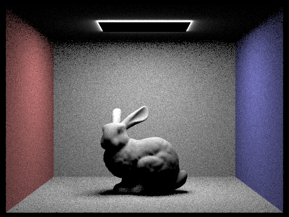 |
|
Focus on one particular scene with at least one area light and compare the noise levels in soft shadows when rendering with 1, 4, 16, and 64 light rays (the -l flag) and with 1 sample per pixel (the -s flag) using light sampling, not uniform hemisphere sampling.
|
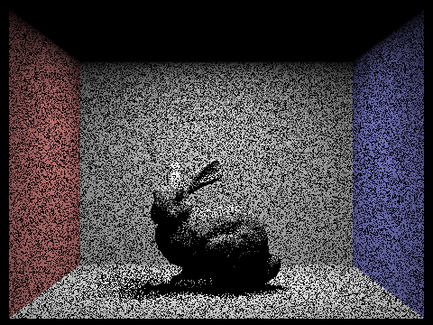 |
|
|
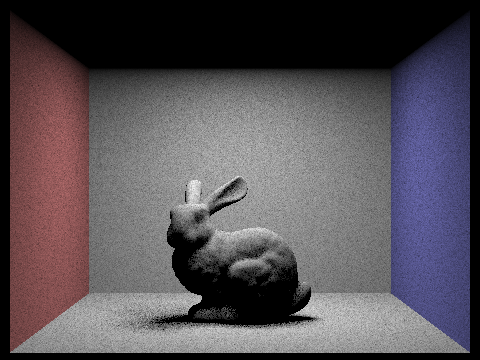 |
|
As the number of light samples increases from 1 to 64, the noise in the soft shadow regions decreases significantly. With only one light sample, the shadows appear extremely noisy and grainy. Increasing the number of samples improves the estimation of direct illumination, leading to smoother and more stable shadows. At 64 samples, the shadow boundaries become much cleaner and visually accurate. This demonstrates that increasing the number of samples per light reduces variance in Monte Carlo integration.
Compare the results between uniform hemisphere sampling and lighting sampling in a one-paragraph analysis.
Compared to uniform hemisphere sampling, importance sampling produces significantly cleaner results with fewer samples. Hemisphere sampling wastes many samples on directions that do not contribute to lighting, resulting in high noise levels. In contrast, importance sampling concentrates samples toward light sources, making each sample more meaningful. As a result, importance sampling converges much faster and produces smoother shading and more stable shadow regions.
Part 4: Global Illumination (20 Points)
Walk through your implementation of the indirect lighting function.
To implement global illumination, I extended the direct-lighting renderer by recursively tracing additional bounce rays. At each surface intersection, I first construct a local coordinate frame using the surface normal so that the local z-axis aligns with the normal direction. In this coordinate system, the outgoing direction \(w_{out}\) is obtained from the negative ray direction, and I then use the diffuse BSDF's sample_f function to generate a new incoming direction \(w_i\) together with its PDF.
The full rendering equation including indirect illumination is: $$ L_o(p, w_o) = L_e(p, w_o) + \int_{\Omega} f_r(p, w_i, w_o) L_i(p, w_i) \cos\theta_i \, d\omega_i $$ This formulation captures both emitted radiance and reflected radiance from all incoming directions, which requires recursive evaluation in a path tracing framework.
The indirect contribution is estimated recursively. For each bounce, I first add the one-bounce radiance term (direct illumination). Then, if the ray depth allows another bounce, I sample a new direction from the BSDF, transform that direction back into world space, and cast a new ray from the hit point offset by EPS_F to avoid self-intersections. If the new ray intersects the scene, I recursively evaluate radiance at that next point and multiply it by the BSDF term, the cosine factor \(\cos\theta\), and the inverse PDF. This gives a Monte Carlo estimate of the reflected indirect radiance. In my implementation, when accumulated bounces are enabled, I sum the direct term and all higher-order bounce contributions; when accumulation is disabled, I isolate the radiance corresponding to a specific bounce depth.
The full rendering equation including indirect illumination is: $$ L_o(p, w_o) = L_e(p, w_o) + \int_{\Omega} f_r(p, w_i, w_o) L_i(p, w_i) \cos\theta_i \, d\omega_i $$ This formulation captures both emitted radiance and reflected radiance from all incoming directions, which requires recursive evaluation in a path tracing framework.
To make long light paths computationally feasible, I use Russian Roulette for probabilistic path termination. After the first indirect bounce, each path continues with a fixed continuation probability. If a path survives, its contribution is divided by that continuation probability so that the overall estimator remains unbiased. This significantly reduces render time while still allowing very deep paths to contribute to the final image.
The full rendering equation including indirect illumination is: $$ L_o(p, w_o) = L_e(p, w_o) + \int_{\Omega} f_r(p, w_i, w_o) L_i(p, w_i) \cos\theta_i \, d\omega_i $$ This formulation captures both emitted radiance and reflected radiance from all incoming directions, which requires recursive evaluation in a path tracing framework.
Show some images rendered with global (direct and indirect) illumination. Use 1024 samples per pixel.
|
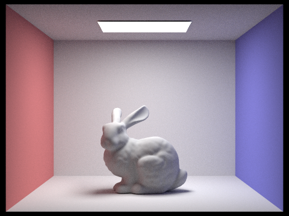 |
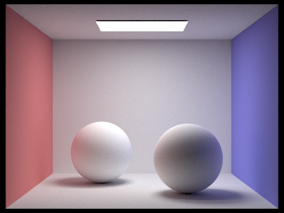 |
With global illumination enabled, the scene becomes noticeably richer than in the direct-lighting-only case. Surfaces that were previously dark receive energy from secondary and higher-order bounces, the ceiling becomes illuminated by light reflected from the floor and walls, and subtle color bleeding appears near the red and blue side walls. These effects are impossible to capture with simple rasterization or direct illumination alone and are the main reason path tracing produces more realistic images.
Pick one scene and compare rendered views first with only direct illumination, then only indirect illumination. Use 1024 samples per pixel.
|
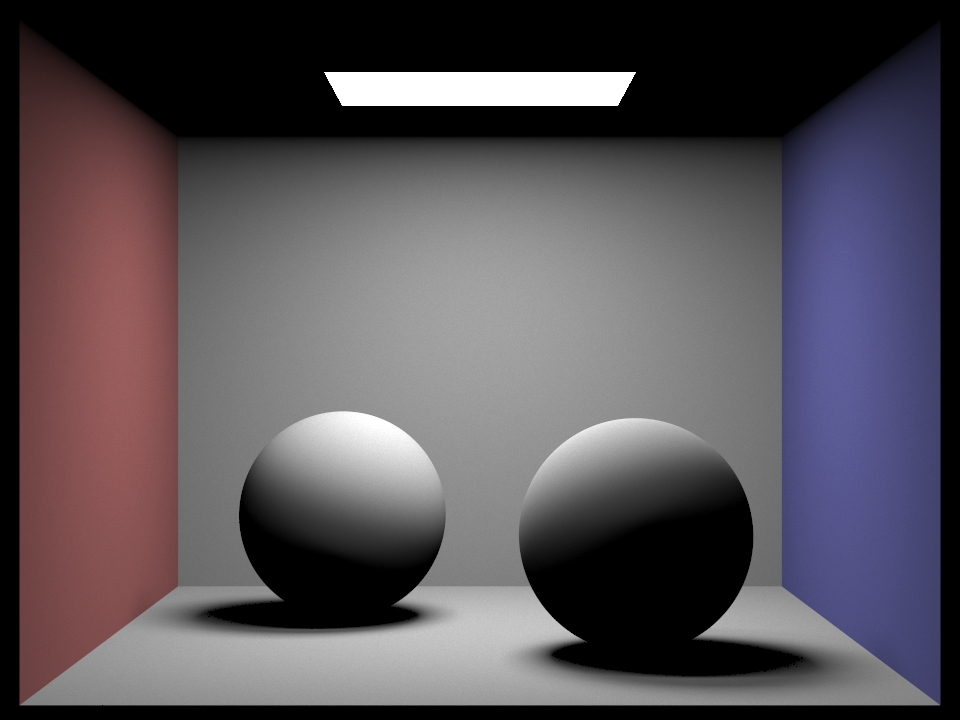 |
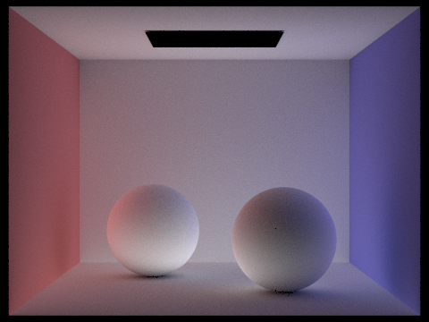 |
The direct-only image contains illumination that comes straight from the light source after a single reflection from scene geometry. It preserves the major shadow structure and the overall lighting layout, but regions not directly visible to the light remain much darker. The indirect-only image, on the other hand, isolates the contribution from bounced light. Although it is dimmer overall, it clearly reveals the soft fill light that spreads through the box after multiple reflections. This comparison highlights that global illumination is not merely “extra brightness”; it is a physically meaningful redistribution of energy that softens the image, reduces harsh contrast, and introduces interreflection effects.
For CBbunny.dae, render the mth bounce of light with max_ray_depth set to 0, 1, 2, 3, 4, and 5 (the -m flag), and isAccumBounces=false. Explain what you see for the 2nd and 3rd bounce of light, and how it contributes to the quality of the rendered image compared to rasterization.
|
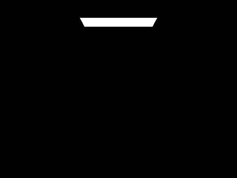 |
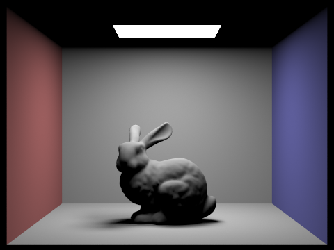 |
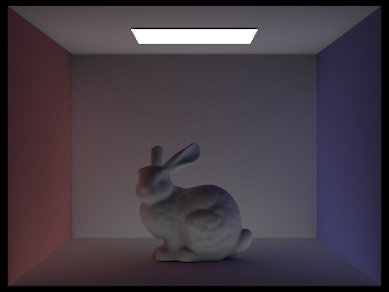 |
|
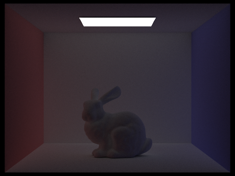 |
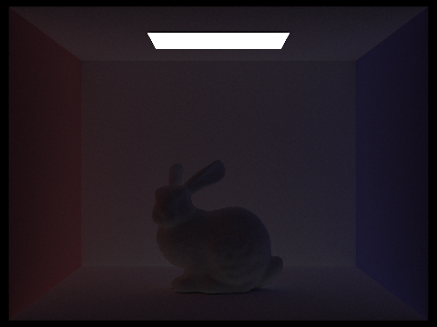 |
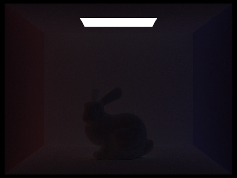 |
In the unaccumulated sequence, each image isolates a single bounce order. At \(m=0\), only emitted light is visible, so only the area light contributes. At \(m=1\), we see the direct lighting term, which dominates the main visibility and shadow structure. The 2nd bounce is the first genuinely global-illumination-only contribution: light reflects off one diffuse surface and then reaches another surface, which begins to brighten regions that are not directly exposed to the light. This is especially visible on the ceiling and in darker corners. The 3rd bounce spreads this energy even further through the scene, making illumination more spatially uniform and subtly reinforcing color bleeding.
Compared to traditional rasterization pipelines, which typically approximate lighting using direct illumination and heuristic ambient terms, path tracing explicitly simulates physical light transport. Higher-order bounces introduce soft global illumination, subtle interreflections, and color bleeding, which significantly enhance realism and visual coherence.
Compare rendered views of accumulated and unaccumulated bounces for CBbunny.dae with max_ray_depth set to 0, 1, 2, 3, 4, and 5 (the -m flag). Use 1024 samples per pixel.
| Accumulated | Unaccumulated |
|---|---|
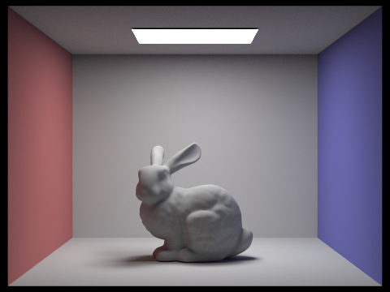 |
|
The accumulated images show the total contribution from all bounces up to the specified depth, while the unaccumulated images isolate only the contribution from the exact bounce order. The accumulated sequence therefore becomes progressively brighter and closer to the final path-traced result as \(m\) increases. In contrast, the unaccumulated sequence reveals that higher-order bounces contribute less energy individually, but they are still visually important because together they create soft fill light, realistic shading transitions, and subtle color transport effects.
For CBbunny.dae, output the Russian Roulette rendering with max_ray_depth set to 0, 1, 2, 3, 4, and 100 (the -m flag). Use 1024 samples per pixel.
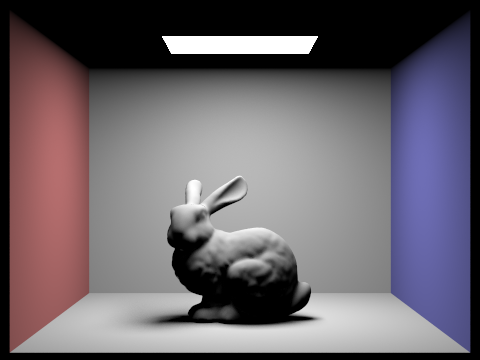 |
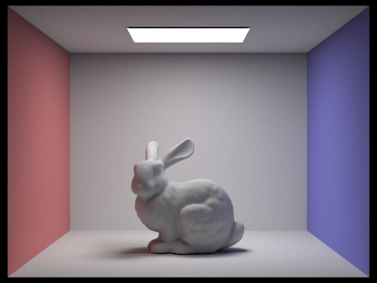 |
|
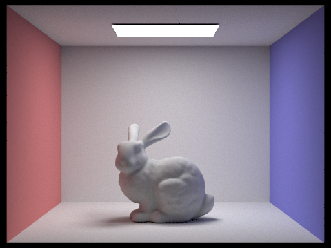 |
 |
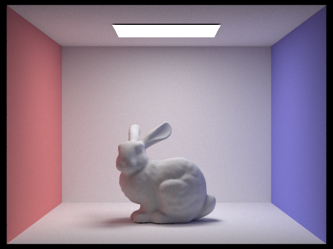 |
Russian Roulette allows the renderer to approximate long light paths without tracing every path to a fixed, extremely large depth. As the allowed maximum depth increases, the image converges toward the full global illumination solution. By the time \(m=100\), the result is visually close to an effectively infinite-bounce solution, while still remaining computationally practical. The estimator remains unbiased because each surviving path contribution is divided by the continuation probability.
Pick one scene and compare rendered views with various sample-per-pixel rates, including at least 1, 2, 4, 8, 16, 64, and 1024. Use 4 light rays.
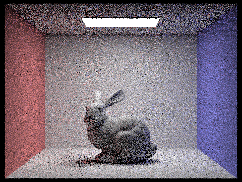 |
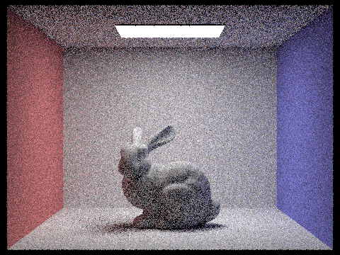 |
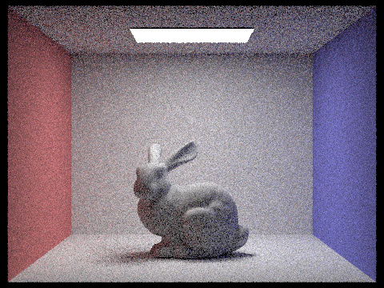 |
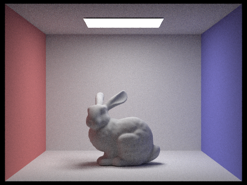 |
||
As the number of samples per pixel increases, image noise decreases substantially. At very low sampling rates such as 1 or 2 spp, the Monte Carlo estimator has high variance, causing visible speckle and unstable shading. Increasing the sample count to 8, 16, and 64 progressively smooths the image and improves the stability of both direct and indirect lighting. At 1024 spp, the rendered image becomes nearly noise-free and serves as a good approximation to the converged solution.
Rendering issue encountered
At the beginning of this part, image rendering was unexpectedly very slow on one computer. After switching to another computer, the rendering speed became much faster, even though the two machines had the same CPU configuration. I still do not fully understand the exact reason for this difference, but a few possible explanations seem reasonable.
One possible reason is that the overall runtime was affected not only by CPU model, but also by system-level factors such as compiler settings, background processes, thermal throttling, memory bandwidth, or differences in how the program was built and executed. Another possibility is that one machine had heavier resource contention from other applications, causing lower effective performance during rendering. It is also possible that differences in operating system state, power mode, cache behavior, or I/O overhead affected the timing results. Since the rendered output itself was correct on both machines, I treated this as a performance-related environment issue rather than a logic bug in the renderer.
Part 5: Adaptive Sampling (20 Points)
Explain adaptive sampling. Walk through your implementation of the adaptive sampling.
Adaptive sampling improves rendering efficiency by allocating more samples to pixels with high variance and fewer samples to pixels that have already converged. Instead of always tracing the full maximum number of samples for every pixel, the renderer evaluates convergence periodically and stops early when the estimated confidence interval falls below a tolerance threshold.
To determine convergence, we estimate the variance and construct a confidence interval. Given $n$ samples, we compute: $$ \mu = \frac{1}{n} \sum x_i $$ $$ \sigma^2 = \frac{1}{n-1} \sum (x_i - \mu)^2 $$ The 95% confidence interval is then estimated as: $$ I = 1.96 \cdot \frac{\sigma}{\sqrt{n}} $$ Sampling is terminated early if: $$ I \leq \text{maxTolerance} \cdot \mu $$
In my implementation, samples are generated in batches. After each batch, I update the running sum and sum of squares of the luminance values for the current pixel. From these, I compute the sample mean and variance, then estimate the 95\% confidence interval using the standard formula for Monte Carlo error. If the interval width is below \(maxTolerance \times mean\), I terminate sampling for that pixel early. Otherwise, sampling continues until either the pixel converges or the maximum sample count is reached. The final color is stored in the sample buffer, and the actual number of samples used for that pixel is written into sampleCountBuffer so that the sample-rate visualization can be generated.
Pick two scenes and render them with at least 2048 samples per pixel. Show a good sampling rate image with clearly visible differences in sampling rate over various regions and pixels. Include both your sample rate image and your noise-free rendered result. Use 1 sample per light and at least 5 for max ray depth.
|
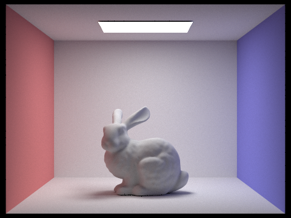 |
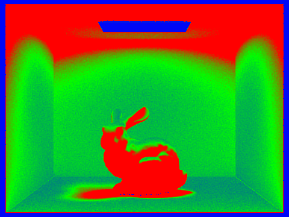 |
|
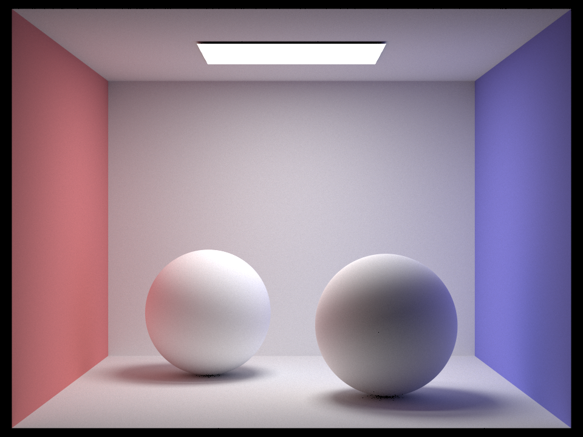 |
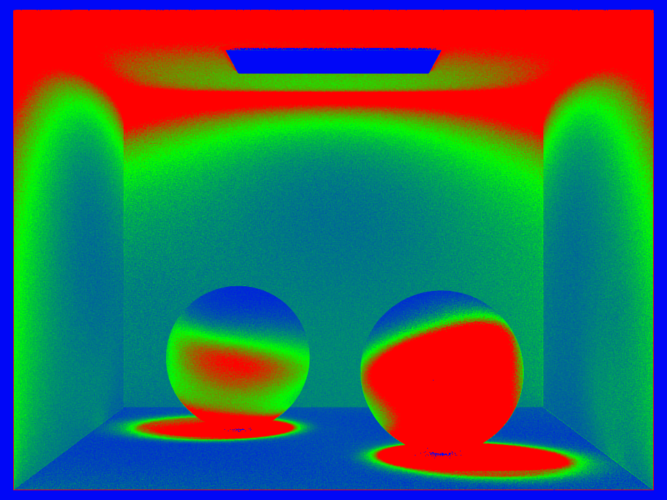 |
The sample-rate visualizations clearly show that adaptive sampling concentrates effort near difficult regions such as geometric edges, contact shadows, and high-contrast illumination boundaries. Flat, smooth regions of the image converge quickly and therefore receive fewer samples. In contrast, pixels around the bunny silhouette, the shadow boundaries, and the bright light source require substantially more samples because they exhibit higher variance. This behavior is desirable because it preserves image quality in visually important regions while reducing wasted computation in easy regions.
Compared to uniform sampling, adaptive sampling achieves similar visual quality with less unnecessary work. The final rendered images remain effectively noise-free, while the sample-rate images reveal where the algorithm chose to spend computational effort. This makes adaptive sampling a practical and principled optimization for Monte Carlo rendering.
Part 6: Extra Credit - Near-First BVH Traversal
What I implemented
For extra credit, I implemented a near-first BVH traversal optimization. In my original BVH traversal, the renderer always visited the left child first and then the right child. In the optimized version, I first test the ray against both child bounding boxes, compare their entry distances, and recursively visit the nearer child first. This is a very small change, but it improves pruning because a closer hit can shrink ray.max_t earlier and make the farther child easier to reject.
Why the original traversal is suboptimal
In the original implementation, traversal order was fixed: left subtree first, right subtree second. However, the closer intersection is not guaranteed to lie in the left subtree. If the actual nearest hit is in the right subtree, then visiting the left subtree first delays the update of ray.max_t. That means the farther subtree may still be traversed even though it could have been skipped after an earlier close hit. This wastes bounding-box tests and primitive intersection tests, especially in dense scenes.
What files I changed
I only changed one file:
bvh.cpp: I modifiedhas_intersection(const Ray &ray, BVHNode *node)andintersect(const Ray &ray, Intersection *i, BVHNode *node).
I did not change BVH construction, node layout, bounding box code, or any other renderer components. This keeps the extra credit localized and easy to reason about.
How the optimization works
Before recursing into an internal BVH node, I test the ray against both children's bounding boxes and compute their valid hit intervals. If only one child is hit, I recurse into that child only. If both children are hit, I compare the entry times and visit the child with the smaller entry time first. After traversing the nearer child, ray.max_t may shrink because a closer primitive hit has been found. When the farther child's bounding box is tested afterward, that updated upper bound can cause the box test to fail, which prunes the entire subtree.
This optimization applies to both has_intersection(...) and intersect(...). In has_intersection(...), it can also improve short-circuiting because a nearer child hit may return immediately. In intersect(...), it helps reduce unnecessary work by making later traversal stricter through the updated ray.max_t.
Performance comparison
| Scene | Version | Wall Time (s) | Render Time (s) | Avg Speed (Mray/s) | Intersection Tests / Ray |
|---|---|---|---|---|---|
cow.dae |
original | 0.30 | 0.0966 | 2.7695 | 4.643737 |
cow.dae |
near-first | 0.25 | 0.0747 | 3.0241 | 3.889659 |
maxplanck.dae |
original | 0.72 | 0.1046 | 2.8743 | 5.340209 |
maxplanck.dae |
near-first | 0.64 | 0.0864 | 3.3252 | 4.506818 |
CBlucy.dae |
original | 2.07 | 0.0990 | 3.2140 | 6.655369 |
CBlucy.dae |
near-first | 1.98 | 0.0971 | 3.3961 | 6.529659 |
The optimization consistently improved traversal efficiency. Using wall-clock time, the speedup was about 1.20x on cow.dae, 1.13x on maxplanck.dae, and 1.05x on CBlucy.dae. The most convincing metric is the average number of intersection tests per ray, which dropped from 4.643737 to 3.889659 on cow.dae, from 5.340209 to 4.506818 on maxplanck.dae, and from 6.655369 to 6.529659 on CBlucy.dae. Average ray throughput also increased on all three scenes.
Discussion
This extra credit shows that traversal order matters even when the BVH itself is unchanged. The optimization is especially effective when a closer subtree can be visited first, because the resulting smaller ray.max_t makes later pruning more aggressive. The gains were strongest on cow.dae and maxplanck.dae, where the average number of intersection tests per ray dropped noticeably. On CBlucy.dae, the improvement was smaller but still measurable, which suggests that near-first traversal helps most when the scene structure gives the traversal more opportunities to prune the farther subtree.
A limitation of this approach is that it does not change the BVH structure itself, so the improvement is bounded by the quality of the existing hierarchy. It is still a useful optimization because it is extremely localized, easy to implement, and produces a measurable performance improvement without altering rendering correctness.